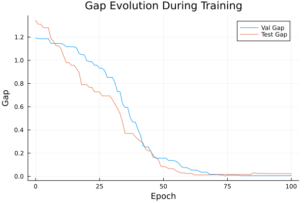
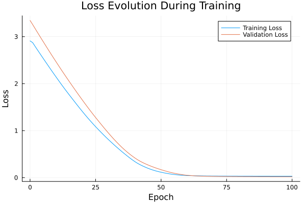

Basic Tutorial: Training with FYL on Argmax Benchmark
This tutorial demonstrates the basic workflow for training a policy using the Perturbed Fenchel-Young Loss algorithm.
Setup
using DecisionFocusedLearningAlgorithms
using DecisionFocusedLearningBenchmarks
using MLUtils: splitobs
using PlotsCreate Benchmark and Data
b = ArgmaxBenchmark()
dataset = generate_dataset(b, 100)
train_data, val_data, test_data = splitobs(dataset; at=(0.3, 0.3, 0.4))(DecisionFocusedLearningBenchmarks.Utils.DataSample{@NamedTuple{}, @NamedTuple{}, Matrix{Float32}, Vector{Float32}, Vector{Float32}}[DataSample(x=Float32[0.698242 -0.413028 … -1.41679 -0.0695531; -1.36399 0.495453 … 1.7702 -2.65246; … ; 1.19692 0.774962 … -0.680854 0.329019; -0.628731 -0.198637 … 0.895527 0.211884], θ=Float32[-0.199997, -1.06027, -0.0172844, -0.867153, 1.09893, 2.91727, -3.55484, 2.37432, -2.02494, 1.30383], y=Float32[0.0, 0.0, 0.0, 0.0, 0.0, 1.0, 0.0, 0.0, 0.0, 0.0]), DataSample(x=Float32[0.989809 1.25387 … -0.2116 -1.0737; -0.447789 -1.50152 … -1.19516 0.0195695; … ; -1.06689 -0.348259 … -0.253797 -0.532844; 1.83619 0.760119 … 1.11898 1.07438], θ=Float32[1.47158, 2.2368, -0.0667594, 1.08069, -0.315247, -0.309912, -1.63764, -0.398146, -0.572485, -1.28528], y=Float32[0.0, 1.0, 0.0, 0.0, 0.0, 0.0, 0.0, 0.0, 0.0, 0.0]), DataSample(x=Float32[-0.457084 -1.57173 … -0.474764 -0.401736; 0.100979 1.73147 … -2.94116 0.160103; … ; 0.904353 0.220973 … 1.55128 -0.440385; 1.41631 1.19242 … -1.73887 0.898449], θ=Float32[-0.866759, -1.68953, -0.908704, -0.121628, 0.153166, 1.01105, -2.01239, -1.25229, 0.434984, -0.326618], y=Float32[0.0, 0.0, 0.0, 0.0, 0.0, 1.0, 0.0, 0.0, 0.0, 0.0]), DataSample(x=Float32[0.0123577 -0.190241 … 0.233885 0.335638; -0.825212 0.712328 … -0.360446 -0.824065; … ; -0.0177002 -0.571878 … 1.21293 1.45824; 0.499556 0.181401 … -0.299484 1.44247], θ=Float32[0.72388, -0.880812, 0.760916, -0.416277, -2.37955, -0.571606, -1.73763, 0.800868, -0.0444167, 0.466415], y=Float32[0.0, 0.0, 0.0, 0.0, 0.0, 0.0, 0.0, 1.0, 0.0, 0.0]), DataSample(x=Float32[0.717053 1.85219 … 2.14647 0.844726; -1.10662 0.425838 … 1.12648 -0.680168; … ; -0.445949 1.7874 … -0.280533 1.23135; -0.569046 1.43272 … 0.162863 1.17034], θ=Float32[1.3499, 0.915715, -0.217978, 0.634694, -0.284815, 0.480593, -1.4866, 0.419784, 0.394321, 0.478229], y=Float32[1.0, 0.0, 0.0, 0.0, 0.0, 0.0, 0.0, 0.0, 0.0, 0.0]), DataSample(x=Float32[0.765985 -0.484227 … 1.02236 -1.18054; 0.770848 0.0814901 … 1.78366 -0.361326; … ; 1.63196 1.64286 … 1.49231 -0.382568; 0.490078 0.604484 … -1.02475 0.306196], θ=Float32[1.57134, -1.45329, -0.439608, 0.437247, -1.76834, -1.14391, 0.338725, -2.50524, 1.168, -0.488026], y=Float32[1.0, 0.0, 0.0, 0.0, 0.0, 0.0, 0.0, 0.0, 0.0, 0.0]), DataSample(x=Float32[-1.25649 1.304 … 0.150962 -0.748127; 0.781093 -0.626405 … 1.11129 0.018188; … ; -2.25025 -0.879464 … -1.01083 0.153365; 0.877062 0.681205 … 0.373668 0.189143], θ=Float32[-0.642218, 1.56871, -0.209993, 1.91863, -0.0712101, -0.616273, -0.948574, 1.6883, 1.39254, 0.590458], y=Float32[0.0, 0.0, 0.0, 1.0, 0.0, 0.0, 0.0, 0.0, 0.0, 0.0]), DataSample(x=Float32[0.700035 -0.508075 … 0.290186 -1.55021; 2.07512 -0.46345 … 0.649376 -0.0289372; … ; 0.123996 -1.6058 … -1.21793 1.10113; -0.702458 -0.096802 … 1.25457 -0.836211], θ=Float32[-0.0270503, -0.747441, -0.116734, -0.920565, -0.174988, 0.116738, 0.62422, 0.799172, 0.678684, -1.07652], y=Float32[0.0, 0.0, 0.0, 0.0, 0.0, 0.0, 0.0, 1.0, 0.0, 0.0]), DataSample(x=Float32[0.781489 1.224 … 0.159206 -0.935881; 0.712992 0.101529 … 0.778953 0.401128; … ; 0.190244 2.19061 … -3.04783 0.791487; 1.15218 -1.4248 … 0.0104864 0.873575], θ=Float32[0.0653985, 0.591212, 1.8514, 0.149334, 0.590145, 2.97782, 2.32675, -0.449225, 0.129168, -0.829027], y=Float32[0.0, 0.0, 0.0, 0.0, 0.0, 1.0, 0.0, 0.0, 0.0, 0.0]), DataSample(x=Float32[-1.11158 0.528177 … 0.389288 -1.2932; 0.890118 0.728974 … -0.613268 -0.0917877; … ; 0.146814 0.741902 … -1.22789 -0.441356; 1.04122 -2.00021 … -0.514729 -0.0348637], θ=Float32[-2.08366, 1.07381, -1.58105, -0.328804, -0.670657, -0.0310095, 0.302244, -0.597371, 1.23114, -1.04609], y=Float32[0.0, 0.0, 0.0, 0.0, 0.0, 0.0, 0.0, 0.0, 1.0, 0.0]) … DataSample(x=Float32[2.44463 0.100279 … -0.546511 0.829825; 1.30266 1.11508 … -0.0268463 1.06183; … ; 0.528031 0.127531 … 1.03062 -0.489959; -1.13925 -0.23234 … -0.553155 0.118202], θ=Float32[2.60728, -0.53112, -1.30145, 1.1065, -0.576386, 0.992299, 2.88092, 0.557527, -0.406126, -0.0479169], y=Float32[0.0, 0.0, 0.0, 0.0, 0.0, 0.0, 1.0, 0.0, 0.0, 0.0]), DataSample(x=Float32[-0.79568 0.842934 … -0.322012 1.43289; 0.604117 0.757642 … 1.11847 -1.15402; … ; -0.933693 0.298724 … 0.359056 0.918157; 1.85575 -2.04942 … -2.12491 0.25959], θ=Float32[0.689541, 2.33346, 2.81953, 2.21618, -0.97834, 1.25378, 0.378863, -1.1171, 2.05173, 0.665686], y=Float32[0.0, 0.0, 1.0, 0.0, 0.0, 0.0, 0.0, 0.0, 0.0, 0.0]), DataSample(x=Float32[0.820022 -0.940209 … -1.35758 -2.23244; 1.69965 1.41728 … 2.16205 -0.172813; … ; -0.660541 0.851407 … -0.935074 0.248291; -1.97488 1.8566 … 0.323776 0.000193909], θ=Float32[-0.266474, -1.05477, -2.18467, 0.0483479, 0.630094, 2.34878, -2.8383, -1.16631, -3.00976, -0.737373], y=Float32[0.0, 0.0, 0.0, 0.0, 0.0, 1.0, 0.0, 0.0, 0.0, 0.0]), DataSample(x=Float32[1.21997 -0.0663002 … -0.500508 -0.512388; -0.429898 1.38173 … -0.349181 1.11299; … ; 0.0947076 0.0730574 … -0.61221 0.146843; -0.121657 0.600046 … 1.17386 -2.27132], θ=Float32[0.453206, -1.30332, -1.87099, 1.54002, 0.203207, -1.17706, -1.16169, -1.46795, -1.77481, 0.702345], y=Float32[0.0, 0.0, 0.0, 1.0, 0.0, 0.0, 0.0, 0.0, 0.0, 0.0]), DataSample(x=Float32[1.06487 1.42984 … 0.447608 -1.48069; 0.555776 1.22816 … -1.36972 -0.24212; … ; 0.00953065 -0.178612 … -1.43665 0.608801; -0.630126 1.21369 … -1.93819 1.49914], θ=Float32[2.20019, 1.732, 0.49152, 0.865859, 2.05585, -2.37209, 0.21651, 0.555361, 1.80136, -1.58933], y=Float32[1.0, 0.0, 0.0, 0.0, 0.0, 0.0, 0.0, 0.0, 0.0, 0.0]), DataSample(x=Float32[-0.842909 -0.672868 … -0.127895 -0.650533; -1.25938 -1.51633 … -1.08267 0.024414; … ; -1.02298 1.2846 … -0.33791 -0.643239; -1.38889 0.267975 … 0.135885 0.803434], θ=Float32[0.501223, 0.738259, -0.610032, -0.774398, 0.958219, -0.560784, -1.0332, 1.6575, -0.387172, 0.100366], y=Float32[0.0, 0.0, 0.0, 0.0, 0.0, 0.0, 0.0, 1.0, 0.0, 0.0]), DataSample(x=Float32[1.7191 1.4982 … 1.17035 0.497868; -0.447136 0.292988 … 0.312868 -0.150729; … ; -1.60636 1.19031 … -0.424425 -0.902024; 1.37208 0.0243414 … -1.51258 1.11325], θ=Float32[2.38634, 1.06346, 0.325147, -0.555142, -0.77632, -0.728512, -0.949125, -1.92001, 1.60579, -0.39226], y=Float32[1.0, 0.0, 0.0, 0.0, 0.0, 0.0, 0.0, 0.0, 0.0, 0.0]), DataSample(x=Float32[-0.200014 1.19247 … 0.149148 -0.234887; 1.26569 -0.389801 … -0.807118 0.670785; … ; -1.12457 1.08382 … 1.86485 -1.39727; -0.403379 -0.483516 … -0.185958 0.134945], θ=Float32[2.15187, -0.642634, -1.0758, -1.03794, 1.49227, -0.28773, -1.04929, 0.713369, 0.552457, -2.75155], y=Float32[1.0, 0.0, 0.0, 0.0, 0.0, 0.0, 0.0, 0.0, 0.0, 0.0]), DataSample(x=Float32[0.243098 -2.1423 … 0.707024 -0.724861; -1.58644 -2.35852 … -0.404068 0.638006; … ; -0.342527 0.319123 … -0.367868 0.0202315; -1.14075 0.0829359 … -1.59028 1.38396], θ=Float32[2.23309, -2.44851, -2.04333, -0.515656, 1.96828, -1.77662, -0.279952, -1.66751, 0.691652, -1.22622], y=Float32[1.0, 0.0, 0.0, 0.0, 0.0, 0.0, 0.0, 0.0, 0.0, 0.0]), DataSample(x=Float32[0.420066 -0.360372 … -0.906077 0.719392; 1.07062 -0.612187 … 0.915731 -1.09242; … ; -0.40947 -0.518839 … -0.609585 0.0299653; -1.44511 1.19637 … -0.123477 0.352856], θ=Float32[0.385976, 0.149588, 1.01212, -0.0675352, -0.138104, 1.77596, 0.0327673, -0.238287, -0.00140447, 0.311643], y=Float32[0.0, 0.0, 0.0, 0.0, 0.0, 1.0, 0.0, 0.0, 0.0, 0.0])], DecisionFocusedLearningBenchmarks.Utils.DataSample{@NamedTuple{}, @NamedTuple{}, Matrix{Float32}, Vector{Float32}, Vector{Float32}}[DataSample(x=Float32[-0.44129 1.1131 … -0.504336 -0.586189; 0.0913868 0.554194 … -0.475341 -1.49322; … ; 1.04355 1.11393 … 0.142045 -0.0479962; -0.164663 -0.603103 … 1.12103 -0.194102], θ=Float32[0.0882536, 0.36901, -0.527398, -0.633078, 0.26983, 2.47386, 1.67296, 0.411095, -0.780293, 0.213362], y=Float32[0.0, 0.0, 0.0, 0.0, 0.0, 1.0, 0.0, 0.0, 0.0, 0.0]), DataSample(x=Float32[-0.475618 -1.1568 … 0.609672 1.41925; 1.13618 0.262865 … -0.402622 -0.466489; … ; 0.84183 -1.46146 … -2.22006 2.04867; 0.315667 1.01863 … 0.355463 -0.368055], θ=Float32[1.10711, -0.992431, -0.110894, -0.358838, 0.606566, -0.277431, 0.435806, -0.399098, 0.617032, 0.285672], y=Float32[1.0, 0.0, 0.0, 0.0, 0.0, 0.0, 0.0, 0.0, 0.0, 0.0]), DataSample(x=Float32[-0.44074 0.0343059 … -0.919676 -0.512495; -0.65413 -0.926929 … 0.729951 1.26811; … ; 0.582814 -0.727671 … -1.73592 0.144103; -2.28506 0.351349 … 0.116031 -0.263001], θ=Float32[-0.0710407, -0.200289, -2.29922, -1.05786, -2.08231, -0.0291048, 3.67787, 1.32096, -0.805439, 1.11565], y=Float32[0.0, 0.0, 0.0, 0.0, 0.0, 0.0, 1.0, 0.0, 0.0, 0.0]), DataSample(x=Float32[0.467631 -1.65302 … -0.555331 -0.484089; 0.938273 0.944686 … 0.866603 0.579095; … ; 0.891159 -0.191118 … 1.44547 0.430637; 0.344853 0.139146 … -0.98407 -0.227274], θ=Float32[0.239443, -1.02381, 0.385982, -0.114145, -1.00402, 1.35769, -0.802452, 1.36518, -0.583326, 2.20205], y=Float32[0.0, 0.0, 0.0, 0.0, 0.0, 0.0, 0.0, 0.0, 0.0, 1.0]), DataSample(x=Float32[0.703806 1.19473 … -0.675421 -0.0578567; 0.273486 1.32939 … -0.780098 -0.433009; … ; -0.48808 1.67756 … -1.16466 -1.55541; 0.165097 -0.0809807 … 0.30238 1.75684], θ=Float32[1.52289, 0.85293, -1.62139, 0.245936, -0.45222, -1.80498, 0.0781912, 1.1503, -1.1222, -0.742545], y=Float32[1.0, 0.0, 0.0, 0.0, 0.0, 0.0, 0.0, 0.0, 0.0, 0.0]), DataSample(x=Float32[0.493963 0.755532 … 0.262874 -0.520522; -0.21904 -1.65544 … 1.34569 -0.0158239; … ; 0.20027 1.06927 … -0.139674 -1.12043; -0.552264 0.774406 … -0.397791 -1.13477], θ=Float32[1.11202, 0.132151, 0.455808, -0.523855, 2.38421, 1.65015, -0.964756, -1.69471, 0.243101, -0.189431], y=Float32[0.0, 0.0, 0.0, 0.0, 1.0, 0.0, 0.0, 0.0, 0.0, 0.0]), DataSample(x=Float32[1.0026 -0.863544 … -0.0918737 0.480481; 2.38258 0.594377 … 1.1865 -1.57581; … ; 0.755737 -0.348261 … 1.40827 0.090275; 0.462321 -1.31801 … -0.784828 -0.145409], θ=Float32[-0.36545, 0.397837, -1.64793, 0.991423, 1.39474, 0.836011, 0.869521, 1.0976, -0.368934, -0.309189], y=Float32[0.0, 0.0, 0.0, 0.0, 1.0, 0.0, 0.0, 0.0, 0.0, 0.0]), DataSample(x=Float32[-0.80487 0.839718 … 1.30273 -1.26303; -1.19035 -0.124539 … 0.726423 1.61453; … ; 0.502256 -1.21884 … -0.893451 -0.398514; -0.00718208 0.033802 … -1.82206 -0.22204], θ=Float32[-0.620002, 2.76113, 2.20995, -0.160872, 0.222041, 0.713648, -0.0695045, -0.576525, 0.758433, -1.04009], y=Float32[0.0, 1.0, 0.0, 0.0, 0.0, 0.0, 0.0, 0.0, 0.0, 0.0]), DataSample(x=Float32[1.15034 -0.812014 … 0.68247 0.567279; 0.304495 -1.26994 … -0.0858159 1.47129; … ; 0.0285966 1.7405 … -0.864174 0.689762; -0.925907 -0.28697 … -0.698327 0.558274], θ=Float32[1.26106, -0.857185, -0.216899, 0.892277, 0.721118, -1.54338, -0.308586, 0.707381, 0.920666, 1.38734], y=Float32[0.0, 0.0, 0.0, 0.0, 0.0, 0.0, 0.0, 0.0, 0.0, 1.0]), DataSample(x=Float32[0.0258352 -2.17264 … 0.835554 -0.674007; 0.730794 0.284004 … 0.302194 -0.43167; … ; -1.43463 -1.28283 … 0.739267 0.0756449; 1.3984 -0.597574 … -0.93173 0.571897], θ=Float32[1.30984, -0.604511, 0.446088, 0.488061, -0.109086, -0.587873, 0.00919294, 1.25261, -0.472144, -1.10735], y=Float32[1.0, 0.0, 0.0, 0.0, 0.0, 0.0, 0.0, 0.0, 0.0, 0.0]) … DataSample(x=Float32[-1.28963 0.571564 … -0.017378 -0.0922163; 1.33886 -0.253093 … -1.05613 -1.72521; … ; -0.574872 -0.563347 … -1.26083 -0.27113; 1.23902 0.217067 … -0.388029 0.400479], θ=Float32[-0.871069, 0.00152485, 1.0587, 0.973658, -0.65583, -0.149809, 2.99686, 0.868919, 0.0218232, -1.29922], y=Float32[0.0, 0.0, 0.0, 0.0, 0.0, 0.0, 1.0, 0.0, 0.0, 0.0]), DataSample(x=Float32[1.04575 0.437057 … -0.165927 0.28023; -1.81891 0.780793 … 0.358714 0.928151; … ; 0.679798 1.54463 … -0.755176 0.932173; -0.162006 -0.450793 … 0.92527 -1.20724], θ=Float32[1.23493, 1.60635, -0.628785, -0.286623, -2.34135, -0.145515, 0.271814, 0.684167, 0.963605, 0.21498], y=Float32[0.0, 1.0, 0.0, 0.0, 0.0, 0.0, 0.0, 0.0, 0.0, 0.0]), DataSample(x=Float32[1.10779 0.612146 … -0.318228 -0.475891; -0.119078 -0.599241 … -0.0262052 -0.501829; … ; -0.490262 -0.560759 … -0.935258 -1.42278; -0.471237 0.00708826 … 0.0653683 -0.068664], θ=Float32[0.895702, 0.872278, -0.000874907, -0.355247, -1.32009, -1.36716, -1.71946, -0.304415, 0.277202, -1.23841], y=Float32[1.0, 0.0, 0.0, 0.0, 0.0, 0.0, 0.0, 0.0, 0.0, 0.0]), DataSample(x=Float32[0.765088 0.933443 … 0.663295 -1.58777; -1.30712 0.938364 … 0.5888 -0.0206392; … ; -2.40405 1.59424 … -1.92609 -2.28914; 0.754878 0.506953 … 0.44291 0.0201264], θ=Float32[0.795653, 0.386367, -2.28547, 0.905008, -0.191753, -1.0264, 1.92865, 0.929039, 2.7557, -1.82277], y=Float32[0.0, 0.0, 0.0, 0.0, 0.0, 0.0, 0.0, 0.0, 1.0, 0.0]), DataSample(x=Float32[0.92298 0.0872442 … -0.71898 2.29426; -1.65591 0.531007 … 0.693329 0.289425; … ; 2.21332 0.349353 … 0.120955 -1.85095; 0.38539 0.966786 … 1.2131 0.452151], θ=Float32[1.31678, 1.01805, 0.163629, 0.917125, 0.141604, -2.23471, -1.86027, -1.72741, -1.51159, 1.58194], y=Float32[0.0, 0.0, 0.0, 0.0, 0.0, 0.0, 0.0, 0.0, 0.0, 1.0]), DataSample(x=Float32[0.370757 -0.564826 … -0.369434 0.844677; -1.11907 -1.07225 … 2.23324 1.1132; … ; -0.271888 0.210708 … 1.07644 -0.372563; 0.858571 0.220047 … 0.613009 0.107025], θ=Float32[0.652737, -1.18882, -2.00157, 1.58647, -1.43413, -1.19463, 0.65883, 0.316424, -2.17796, 0.407709], y=Float32[0.0, 0.0, 0.0, 1.0, 0.0, 0.0, 0.0, 0.0, 0.0, 0.0]), DataSample(x=Float32[-0.923218 0.659563 … -0.939606 -1.26506; 1.43768 -0.686752 … -1.27343 0.00809257; … ; 0.0800639 -0.133462 … 1.2862 -0.122648; -1.42055 -0.0703744 … 0.346056 -0.465195], θ=Float32[-2.32316, 1.37065, -2.55243, 0.68632, 0.280466, -0.099786, -0.800236, 0.0296869, -1.54366, -2.29352], y=Float32[0.0, 1.0, 0.0, 0.0, 0.0, 0.0, 0.0, 0.0, 0.0, 0.0]), DataSample(x=Float32[-0.946698 2.65614 … 0.199889 -0.249461; -0.14107 -1.86178 … 0.552734 0.782588; … ; 0.0350975 -0.192992 … -1.48397 0.00656441; -1.35735 1.05348 … 1.03587 -0.2668], θ=Float32[-0.172509, 4.29357, 0.563379, 0.893972, -0.178677, -0.322037, -0.0484657, -1.19189, -0.441119, -0.513339], y=Float32[0.0, 1.0, 0.0, 0.0, 0.0, 0.0, 0.0, 0.0, 0.0, 0.0]), DataSample(x=Float32[-1.21325 0.178839 … -0.521373 0.41628; -0.123483 -0.12693 … 1.42989 0.368358; … ; 0.293879 0.407681 … 1.47034 0.124719; -1.31717 -0.96209 … 1.05562 0.669008], θ=Float32[0.924511, -0.546941, -0.359214, 0.344044, -0.332725, 0.875501, 1.00349, -0.0487543, -0.905456, -1.00019], y=Float32[0.0, 0.0, 0.0, 0.0, 0.0, 0.0, 1.0, 0.0, 0.0, 0.0]), DataSample(x=Float32[0.938777 0.0467683 … -1.53629 -2.87484; -0.0263046 1.52516 … 1.93359 0.313147; … ; -0.084195 -0.404866 … 0.0228637 -0.0986175; 2.25054 0.335122 … 0.600319 0.134894], θ=Float32[-1.30492, 0.0699229, 1.26757, -0.319239, 0.83169, 1.44656, 0.862449, -0.784501, -0.298834, -1.61633], y=Float32[0.0, 0.0, 0.0, 0.0, 0.0, 1.0, 0.0, 0.0, 0.0, 0.0])], DecisionFocusedLearningBenchmarks.Utils.DataSample{@NamedTuple{}, @NamedTuple{}, Matrix{Float32}, Vector{Float32}, Vector{Float32}}[DataSample(x=Float32[0.549004 0.284758 … 1.05753 0.0720145; -2.08487 -0.178741 … 2.22194 -0.988134; … ; 1.64594 0.397199 … 0.0028317 1.05671; 0.840063 -0.476036 … 0.765101 -0.941981], θ=Float32[1.2908, -0.690408, 1.51813, -0.567711, -0.041312, 1.29285, 0.739368, 1.03743, -0.2444, 0.72866], y=Float32[0.0, 0.0, 1.0, 0.0, 0.0, 0.0, 0.0, 0.0, 0.0, 0.0]), DataSample(x=Float32[-0.715596 0.29471 … -0.5298 -0.242846; -0.200651 1.07737 … 0.645023 -0.836868; … ; -0.334694 0.483388 … 0.849395 0.714947; 0.0555767 0.103179 … -2.01483 -0.00231092], θ=Float32[-0.669081, -0.706345, -0.295218, 2.0269, 0.652373, 0.627169, 2.12307, 0.731477, 0.149237, 0.558202], y=Float32[0.0, 0.0, 0.0, 0.0, 0.0, 0.0, 1.0, 0.0, 0.0, 0.0]), DataSample(x=Float32[-0.965584 -1.50347 … -0.242724 0.230666; 0.622061 0.819165 … -1.18316 -1.26726; … ; 0.460135 0.830095 … -0.70629 -0.791896; -0.27247 -1.47595 … 0.359078 -1.00733], θ=Float32[-1.33059, -0.796236, -1.03954, -1.93499, 0.992885, -1.46252, 0.220473, -1.06058, 0.962285, -1.36744], y=Float32[0.0, 0.0, 0.0, 0.0, 1.0, 0.0, 0.0, 0.0, 0.0, 0.0]), DataSample(x=Float32[0.329616 1.13792 … -0.435023 -0.888388; -0.671798 -1.66214 … 0.100821 0.0584146; … ; -0.226362 0.0451766 … -0.297664 -0.085001; -0.367991 0.0381016 … -0.262322 0.367463], θ=Float32[0.370729, 1.11142, 1.07519, -1.02602, 1.30282, 2.46194, -1.82705, 0.967666, 1.07364, -1.88824], y=Float32[0.0, 0.0, 0.0, 0.0, 0.0, 1.0, 0.0, 0.0, 0.0, 0.0]), DataSample(x=Float32[-0.891988 0.95114 … -0.405827 -0.535582; 1.0038 -0.778728 … -0.30972 0.13533; … ; 0.762471 0.204405 … 0.821881 -0.0557918; -1.27523 -0.178542 … -2.31237 2.20597], θ=Float32[0.45292, 1.10606, 0.548704, 0.683131, 0.0547919, 0.835759, 0.735978, 0.231035, 0.676054, -2.82938], y=Float32[0.0, 1.0, 0.0, 0.0, 0.0, 0.0, 0.0, 0.0, 0.0, 0.0]), DataSample(x=Float32[0.606874 0.433442 … 1.19863 -0.271382; -0.28216 0.466188 … 0.563196 0.179032; … ; 0.120433 1.03659 … -0.758583 2.64133; 0.0717953 0.884958 … -0.549214 -0.422851], θ=Float32[-1.02341, 0.705591, -1.29227, 2.4148, 1.10128, -1.11179, -0.468585, -0.979514, -0.61233, 0.0149978], y=Float32[0.0, 0.0, 0.0, 1.0, 0.0, 0.0, 0.0, 0.0, 0.0, 0.0]), DataSample(x=Float32[-1.04011 1.91518 … 0.634528 0.836629; -0.780638 0.131331 … 0.472402 -2.18349; … ; -0.130526 0.70636 … -0.471299 -0.65167; 0.0928475 0.245038 … 1.15033 0.752089], θ=Float32[-0.0803722, 0.44167, 0.888045, -0.013896, -0.399868, -0.275556, -3.02696, -1.42474, 1.23144, 2.11129], y=Float32[0.0, 0.0, 0.0, 0.0, 0.0, 0.0, 0.0, 0.0, 0.0, 1.0]), DataSample(x=Float32[-0.449842 0.393406 … 0.178403 -0.34981; -0.308626 0.900596 … -1.38065 1.69914; … ; 0.782382 1.22345 … 0.0338197 0.379171; 1.47229 -0.744556 … -0.682958 1.5013], θ=Float32[-0.444275, 0.610295, -0.660684, -2.69312, 0.0118652, 0.94029, 0.886599, 1.79861, 1.00939, -1.26354], y=Float32[0.0, 0.0, 0.0, 0.0, 0.0, 0.0, 0.0, 1.0, 0.0, 0.0]), DataSample(x=Float32[-1.31409 -0.561189 … 0.620839 1.22268; -0.723969 0.658145 … 0.451678 -1.00629; … ; 0.79672 -1.40491 … -0.480454 0.662222; 0.588884 -1.21841 … 1.16993 -0.606949], θ=Float32[-1.97599, 0.262473, -0.316839, -0.389631, -0.898215, -0.16318, 1.36457, 0.135375, -1.55951, 0.941075], y=Float32[0.0, 0.0, 0.0, 0.0, 0.0, 0.0, 1.0, 0.0, 0.0, 0.0]), DataSample(x=Float32[-0.0600743 -1.28561 … 0.555349 1.38525; -0.107956 -0.964433 … -1.05703 -0.478778; … ; -0.18669 1.56902 … -1.13304 -2.03892; -0.202326 -0.841456 … 1.75302 1.03681], θ=Float32[-0.128, -1.62189, -0.823716, -1.14238, 1.77179, -0.745722, 1.06568, -1.5724, 1.22091, 1.62416], y=Float32[0.0, 0.0, 0.0, 0.0, 1.0, 0.0, 0.0, 0.0, 0.0, 0.0]) … DataSample(x=Float32[-0.238383 -1.70604 … 0.739064 -1.02163; 0.277761 -0.181853 … 1.04172 0.594313; … ; -0.246388 1.48346 … 1.57485 1.47688; 0.544189 1.27034 … 1.62223 0.422249], θ=Float32[-0.60099, -3.2523, -1.88262, 1.00322, -0.922223, 0.86163, -1.37476, -3.09312, -0.696249, -0.534875], y=Float32[0.0, 0.0, 0.0, 1.0, 0.0, 0.0, 0.0, 0.0, 0.0, 0.0]), DataSample(x=Float32[0.556526 0.0704361 … -0.893438 1.18908; 0.633856 0.501069 … -0.680627 -0.28477; … ; -0.127447 2.18353 … -1.60017 -0.324726; 0.283465 0.0136212 … -0.336039 -0.137832], θ=Float32[-0.172944, -0.73575, 1.31264, -0.454163, 1.62819, 0.431552, 1.61354, 1.6864, -0.722281, 1.23209], y=Float32[0.0, 0.0, 0.0, 0.0, 0.0, 0.0, 0.0, 1.0, 0.0, 0.0]), DataSample(x=Float32[-1.68306 -1.59986 … 1.98285 1.03521; 0.277194 -0.356144 … 0.0674081 -1.76681; … ; -0.133381 0.735384 … -0.46965 -0.52755; 0.264579 -1.99164 … -0.491327 0.354706], θ=Float32[-1.01331, -0.915388, 1.22842, -4.06437, 1.33605, 0.28369, 1.67748, -1.44577, 3.18078, 2.43323], y=Float32[0.0, 0.0, 0.0, 0.0, 0.0, 0.0, 0.0, 0.0, 1.0, 0.0]), DataSample(x=Float32[-0.432935 -0.239706 … 0.178166 -0.750862; -0.934002 -0.118282 … 0.370842 0.451104; … ; -0.104753 1.30981 … -0.493708 -0.205967; 0.255821 1.72921 … 1.22243 1.24265], θ=Float32[-1.06854, -1.4467, -0.303548, 1.40613, 1.1632, -0.478028, 0.178946, 1.39822, -1.00776, -0.64311], y=Float32[0.0, 0.0, 0.0, 1.0, 0.0, 0.0, 0.0, 0.0, 0.0, 0.0]), DataSample(x=Float32[-1.33776 1.39564 … -0.197504 0.806347; -0.540213 -0.0345812 … -0.615713 -0.482466; … ; -0.782625 -0.0498119 … 0.1364 0.142081; -2.82872 -0.284264 … -1.87745 0.177344], θ=Float32[1.47638, 0.287405, 1.89823, -2.95291, 2.87834, 0.720782, 0.734562, 0.466226, -0.609852, 0.985206], y=Float32[0.0, 0.0, 0.0, 0.0, 1.0, 0.0, 0.0, 0.0, 0.0, 0.0]), DataSample(x=Float32[1.74565 -0.105614 … -0.0207912 1.58949; -0.0275053 0.684862 … -0.307444 1.37975; … ; 0.489429 0.91089 … 0.0361569 0.999489; -1.61255 -0.195527 … -1.18522 1.15359], θ=Float32[2.39673, -0.587728, 1.54082, 1.44046, 0.940759, -0.375515, 0.159217, -0.216614, 0.519998, 0.633426], y=Float32[1.0, 0.0, 0.0, 0.0, 0.0, 0.0, 0.0, 0.0, 0.0, 0.0]), DataSample(x=Float32[-0.102669 0.392988 … -0.616624 0.25891; -0.870337 0.761111 … 1.34454 0.780218; … ; 1.50911 1.24585 … 1.90461 -0.290222; -0.2614 0.153228 … 0.230819 0.282488], θ=Float32[-0.779785, -0.731051, -1.06551, 1.02356, -0.415062, -0.848469, -0.353455, -1.00576, -1.97042, 0.00109781], y=Float32[0.0, 0.0, 0.0, 1.0, 0.0, 0.0, 0.0, 0.0, 0.0, 0.0]), DataSample(x=Float32[-0.432001 -0.902869 … -1.10622 0.43156; 1.03968 -0.664995 … -0.938317 -2.37291; … ; -0.785744 1.2671 … -0.178367 0.797716; -1.23 2.0418 … -1.00004 -1.10171], θ=Float32[1.38046, -2.60551, 0.575289, 0.0524913, 2.32454, 2.27246, -0.0169814, -2.01075, -1.62061, 1.69291], y=Float32[0.0, 0.0, 0.0, 0.0, 1.0, 0.0, 0.0, 0.0, 0.0, 0.0]), DataSample(x=Float32[1.33445 0.654585 … -0.400066 -1.72981; 0.335595 -0.797039 … 1.40108 0.441675; … ; 0.12077 0.517657 … -0.714791 -0.581261; 1.39947 1.73691 … 0.157665 -1.17001], θ=Float32[0.726612, 1.24823, -1.98745, 1.56742, -1.18506, -1.37436, 1.04215, 0.96825, -0.359126, -0.452886], y=Float32[0.0, 0.0, 0.0, 1.0, 0.0, 0.0, 0.0, 0.0, 0.0, 0.0]), DataSample(x=Float32[0.353776 1.75009 … 2.00462 -0.388821; 0.148474 -1.57776 … 1.53344 -0.304915; … ; -1.08047 1.64869 … 1.03273 0.979461; 1.91421 -0.294972 … -0.615938 0.696659], θ=Float32[-0.41181, 1.7952, 0.409582, 0.924625, -1.91332, -1.02199, -1.19071, 0.69518, 1.33703, -0.552191], y=Float32[0.0, 1.0, 0.0, 0.0, 0.0, 0.0, 0.0, 0.0, 0.0, 0.0])], DecisionFocusedLearningBenchmarks.Utils.DataSample{@NamedTuple{}, @NamedTuple{}, Matrix{Float32}, Vector{Float32}, Vector{Float32}}[])Create Policy
model = generate_statistical_model(b; seed=0)
maximizer = generate_maximizer(b)
policy = DFLPolicy(model, maximizer)DFLPolicy{Flux.Chain{Tuple{Flux.Dense{typeof(identity), Matrix{Float32}, Bool}, typeof(vec)}}, typeof(DecisionFocusedLearningBenchmarks.Argmax.one_hot_argmax)}(Chain(Dense(5 => 1; bias=false), vec), DecisionFocusedLearningBenchmarks.Argmax.one_hot_argmax)Configure Algorithm
algorithm = PerturbedFenchelYoungLossImitation(;
nb_samples=10, ε=0.1, threaded=true, seed=0
)PerturbedFenchelYoungLossImitation{Optimisers.Adam{Float64, Tuple{Float64, Float64}, Float64}, Int64}(10, 0.1, true, Optimisers.Adam(eta=0.001, beta=(0.9, 0.999), epsilon=1.0e-8), 0, false)Define Metrics to track during training
validation_loss_metric = FYLLossMetric(val_data, :validation_loss)
val_gap_metric = FunctionMetric(:val_gap, val_data) do ctx, data
return compute_gap(b, data, ctx.policy.statistical_model, ctx.policy.maximizer)
end
test_gap_metric = FunctionMetric(:test_gap, test_data) do ctx, data
return compute_gap(b, data, ctx.policy.statistical_model, ctx.policy.maximizer)
end
metrics = (validation_loss_metric, val_gap_metric, test_gap_metric)(FYLLossMetric{SubArray{DecisionFocusedLearningBenchmarks.Utils.DataSample{@NamedTuple{}, @NamedTuple{}, Matrix{Float32}, Vector{Float32}, Vector{Float32}}, 1, Vector{DecisionFocusedLearningBenchmarks.Utils.DataSample{@NamedTuple{}, @NamedTuple{}, Matrix{Float32}, Vector{Float32}, Vector{Float32}}}, Tuple{UnitRange{Int64}}, true}}(DecisionFocusedLearningBenchmarks.Utils.DataSample{@NamedTuple{}, @NamedTuple{}, Matrix{Float32}, Vector{Float32}, Vector{Float32}}[DataSample(x=Float32[-0.44129 1.1131 … -0.504336 -0.586189; 0.0913868 0.554194 … -0.475341 -1.49322; … ; 1.04355 1.11393 … 0.142045 -0.0479962; -0.164663 -0.603103 … 1.12103 -0.194102], θ=Float32[0.0882536, 0.36901, -0.527398, -0.633078, 0.26983, 2.47386, 1.67296, 0.411095, -0.780293, 0.213362], y=Float32[0.0, 0.0, 0.0, 0.0, 0.0, 1.0, 0.0, 0.0, 0.0, 0.0]), DataSample(x=Float32[-0.475618 -1.1568 … 0.609672 1.41925; 1.13618 0.262865 … -0.402622 -0.466489; … ; 0.84183 -1.46146 … -2.22006 2.04867; 0.315667 1.01863 … 0.355463 -0.368055], θ=Float32[1.10711, -0.992431, -0.110894, -0.358838, 0.606566, -0.277431, 0.435806, -0.399098, 0.617032, 0.285672], y=Float32[1.0, 0.0, 0.0, 0.0, 0.0, 0.0, 0.0, 0.0, 0.0, 0.0]), DataSample(x=Float32[-0.44074 0.0343059 … -0.919676 -0.512495; -0.65413 -0.926929 … 0.729951 1.26811; … ; 0.582814 -0.727671 … -1.73592 0.144103; -2.28506 0.351349 … 0.116031 -0.263001], θ=Float32[-0.0710407, -0.200289, -2.29922, -1.05786, -2.08231, -0.0291048, 3.67787, 1.32096, -0.805439, 1.11565], y=Float32[0.0, 0.0, 0.0, 0.0, 0.0, 0.0, 1.0, 0.0, 0.0, 0.0]), DataSample(x=Float32[0.467631 -1.65302 … -0.555331 -0.484089; 0.938273 0.944686 … 0.866603 0.579095; … ; 0.891159 -0.191118 … 1.44547 0.430637; 0.344853 0.139146 … -0.98407 -0.227274], θ=Float32[0.239443, -1.02381, 0.385982, -0.114145, -1.00402, 1.35769, -0.802452, 1.36518, -0.583326, 2.20205], y=Float32[0.0, 0.0, 0.0, 0.0, 0.0, 0.0, 0.0, 0.0, 0.0, 1.0]), DataSample(x=Float32[0.703806 1.19473 … -0.675421 -0.0578567; 0.273486 1.32939 … -0.780098 -0.433009; … ; -0.48808 1.67756 … -1.16466 -1.55541; 0.165097 -0.0809807 … 0.30238 1.75684], θ=Float32[1.52289, 0.85293, -1.62139, 0.245936, -0.45222, -1.80498, 0.0781912, 1.1503, -1.1222, -0.742545], y=Float32[1.0, 0.0, 0.0, 0.0, 0.0, 0.0, 0.0, 0.0, 0.0, 0.0]), DataSample(x=Float32[0.493963 0.755532 … 0.262874 -0.520522; -0.21904 -1.65544 … 1.34569 -0.0158239; … ; 0.20027 1.06927 … -0.139674 -1.12043; -0.552264 0.774406 … -0.397791 -1.13477], θ=Float32[1.11202, 0.132151, 0.455808, -0.523855, 2.38421, 1.65015, -0.964756, -1.69471, 0.243101, -0.189431], y=Float32[0.0, 0.0, 0.0, 0.0, 1.0, 0.0, 0.0, 0.0, 0.0, 0.0]), DataSample(x=Float32[1.0026 -0.863544 … -0.0918737 0.480481; 2.38258 0.594377 … 1.1865 -1.57581; … ; 0.755737 -0.348261 … 1.40827 0.090275; 0.462321 -1.31801 … -0.784828 -0.145409], θ=Float32[-0.36545, 0.397837, -1.64793, 0.991423, 1.39474, 0.836011, 0.869521, 1.0976, -0.368934, -0.309189], y=Float32[0.0, 0.0, 0.0, 0.0, 1.0, 0.0, 0.0, 0.0, 0.0, 0.0]), DataSample(x=Float32[-0.80487 0.839718 … 1.30273 -1.26303; -1.19035 -0.124539 … 0.726423 1.61453; … ; 0.502256 -1.21884 … -0.893451 -0.398514; -0.00718208 0.033802 … -1.82206 -0.22204], θ=Float32[-0.620002, 2.76113, 2.20995, -0.160872, 0.222041, 0.713648, -0.0695045, -0.576525, 0.758433, -1.04009], y=Float32[0.0, 1.0, 0.0, 0.0, 0.0, 0.0, 0.0, 0.0, 0.0, 0.0]), DataSample(x=Float32[1.15034 -0.812014 … 0.68247 0.567279; 0.304495 -1.26994 … -0.0858159 1.47129; … ; 0.0285966 1.7405 … -0.864174 0.689762; -0.925907 -0.28697 … -0.698327 0.558274], θ=Float32[1.26106, -0.857185, -0.216899, 0.892277, 0.721118, -1.54338, -0.308586, 0.707381, 0.920666, 1.38734], y=Float32[0.0, 0.0, 0.0, 0.0, 0.0, 0.0, 0.0, 0.0, 0.0, 1.0]), DataSample(x=Float32[0.0258352 -2.17264 … 0.835554 -0.674007; 0.730794 0.284004 … 0.302194 -0.43167; … ; -1.43463 -1.28283 … 0.739267 0.0756449; 1.3984 -0.597574 … -0.93173 0.571897], θ=Float32[1.30984, -0.604511, 0.446088, 0.488061, -0.109086, -0.587873, 0.00919294, 1.25261, -0.472144, -1.10735], y=Float32[1.0, 0.0, 0.0, 0.0, 0.0, 0.0, 0.0, 0.0, 0.0, 0.0]) … DataSample(x=Float32[-1.28963 0.571564 … -0.017378 -0.0922163; 1.33886 -0.253093 … -1.05613 -1.72521; … ; -0.574872 -0.563347 … -1.26083 -0.27113; 1.23902 0.217067 … -0.388029 0.400479], θ=Float32[-0.871069, 0.00152485, 1.0587, 0.973658, -0.65583, -0.149809, 2.99686, 0.868919, 0.0218232, -1.29922], y=Float32[0.0, 0.0, 0.0, 0.0, 0.0, 0.0, 1.0, 0.0, 0.0, 0.0]), DataSample(x=Float32[1.04575 0.437057 … -0.165927 0.28023; -1.81891 0.780793 … 0.358714 0.928151; … ; 0.679798 1.54463 … -0.755176 0.932173; -0.162006 -0.450793 … 0.92527 -1.20724], θ=Float32[1.23493, 1.60635, -0.628785, -0.286623, -2.34135, -0.145515, 0.271814, 0.684167, 0.963605, 0.21498], y=Float32[0.0, 1.0, 0.0, 0.0, 0.0, 0.0, 0.0, 0.0, 0.0, 0.0]), DataSample(x=Float32[1.10779 0.612146 … -0.318228 -0.475891; -0.119078 -0.599241 … -0.0262052 -0.501829; … ; -0.490262 -0.560759 … -0.935258 -1.42278; -0.471237 0.00708826 … 0.0653683 -0.068664], θ=Float32[0.895702, 0.872278, -0.000874907, -0.355247, -1.32009, -1.36716, -1.71946, -0.304415, 0.277202, -1.23841], y=Float32[1.0, 0.0, 0.0, 0.0, 0.0, 0.0, 0.0, 0.0, 0.0, 0.0]), DataSample(x=Float32[0.765088 0.933443 … 0.663295 -1.58777; -1.30712 0.938364 … 0.5888 -0.0206392; … ; -2.40405 1.59424 … -1.92609 -2.28914; 0.754878 0.506953 … 0.44291 0.0201264], θ=Float32[0.795653, 0.386367, -2.28547, 0.905008, -0.191753, -1.0264, 1.92865, 0.929039, 2.7557, -1.82277], y=Float32[0.0, 0.0, 0.0, 0.0, 0.0, 0.0, 0.0, 0.0, 1.0, 0.0]), DataSample(x=Float32[0.92298 0.0872442 … -0.71898 2.29426; -1.65591 0.531007 … 0.693329 0.289425; … ; 2.21332 0.349353 … 0.120955 -1.85095; 0.38539 0.966786 … 1.2131 0.452151], θ=Float32[1.31678, 1.01805, 0.163629, 0.917125, 0.141604, -2.23471, -1.86027, -1.72741, -1.51159, 1.58194], y=Float32[0.0, 0.0, 0.0, 0.0, 0.0, 0.0, 0.0, 0.0, 0.0, 1.0]), DataSample(x=Float32[0.370757 -0.564826 … -0.369434 0.844677; -1.11907 -1.07225 … 2.23324 1.1132; … ; -0.271888 0.210708 … 1.07644 -0.372563; 0.858571 0.220047 … 0.613009 0.107025], θ=Float32[0.652737, -1.18882, -2.00157, 1.58647, -1.43413, -1.19463, 0.65883, 0.316424, -2.17796, 0.407709], y=Float32[0.0, 0.0, 0.0, 1.0, 0.0, 0.0, 0.0, 0.0, 0.0, 0.0]), DataSample(x=Float32[-0.923218 0.659563 … -0.939606 -1.26506; 1.43768 -0.686752 … -1.27343 0.00809257; … ; 0.0800639 -0.133462 … 1.2862 -0.122648; -1.42055 -0.0703744 … 0.346056 -0.465195], θ=Float32[-2.32316, 1.37065, -2.55243, 0.68632, 0.280466, -0.099786, -0.800236, 0.0296869, -1.54366, -2.29352], y=Float32[0.0, 1.0, 0.0, 0.0, 0.0, 0.0, 0.0, 0.0, 0.0, 0.0]), DataSample(x=Float32[-0.946698 2.65614 … 0.199889 -0.249461; -0.14107 -1.86178 … 0.552734 0.782588; … ; 0.0350975 -0.192992 … -1.48397 0.00656441; -1.35735 1.05348 … 1.03587 -0.2668], θ=Float32[-0.172509, 4.29357, 0.563379, 0.893972, -0.178677, -0.322037, -0.0484657, -1.19189, -0.441119, -0.513339], y=Float32[0.0, 1.0, 0.0, 0.0, 0.0, 0.0, 0.0, 0.0, 0.0, 0.0]), DataSample(x=Float32[-1.21325 0.178839 … -0.521373 0.41628; -0.123483 -0.12693 … 1.42989 0.368358; … ; 0.293879 0.407681 … 1.47034 0.124719; -1.31717 -0.96209 … 1.05562 0.669008], θ=Float32[0.924511, -0.546941, -0.359214, 0.344044, -0.332725, 0.875501, 1.00349, -0.0487543, -0.905456, -1.00019], y=Float32[0.0, 0.0, 0.0, 0.0, 0.0, 0.0, 1.0, 0.0, 0.0, 0.0]), DataSample(x=Float32[0.938777 0.0467683 … -1.53629 -2.87484; -0.0263046 1.52516 … 1.93359 0.313147; … ; -0.084195 -0.404866 … 0.0228637 -0.0986175; 2.25054 0.335122 … 0.600319 0.134894], θ=Float32[-1.30492, 0.0699229, 1.26757, -0.319239, 0.83169, 1.44656, 0.862449, -0.784501, -0.298834, -1.61633], y=Float32[0.0, 0.0, 0.0, 0.0, 0.0, 1.0, 0.0, 0.0, 0.0, 0.0])], LossAccumulator(:validation_loss, 0.0, 0)), FunctionMetric{Main.var"#2#3", SubArray{DecisionFocusedLearningBenchmarks.Utils.DataSample{@NamedTuple{}, @NamedTuple{}, Matrix{Float32}, Vector{Float32}, Vector{Float32}}, 1, Vector{DecisionFocusedLearningBenchmarks.Utils.DataSample{@NamedTuple{}, @NamedTuple{}, Matrix{Float32}, Vector{Float32}, Vector{Float32}}}, Tuple{UnitRange{Int64}}, true}}(Main.var"#2#3"(), :val_gap, DecisionFocusedLearningBenchmarks.Utils.DataSample{@NamedTuple{}, @NamedTuple{}, Matrix{Float32}, Vector{Float32}, Vector{Float32}}[DataSample(x=Float32[-0.44129 1.1131 … -0.504336 -0.586189; 0.0913868 0.554194 … -0.475341 -1.49322; … ; 1.04355 1.11393 … 0.142045 -0.0479962; -0.164663 -0.603103 … 1.12103 -0.194102], θ=Float32[0.0882536, 0.36901, -0.527398, -0.633078, 0.26983, 2.47386, 1.67296, 0.411095, -0.780293, 0.213362], y=Float32[0.0, 0.0, 0.0, 0.0, 0.0, 1.0, 0.0, 0.0, 0.0, 0.0]), DataSample(x=Float32[-0.475618 -1.1568 … 0.609672 1.41925; 1.13618 0.262865 … -0.402622 -0.466489; … ; 0.84183 -1.46146 … -2.22006 2.04867; 0.315667 1.01863 … 0.355463 -0.368055], θ=Float32[1.10711, -0.992431, -0.110894, -0.358838, 0.606566, -0.277431, 0.435806, -0.399098, 0.617032, 0.285672], y=Float32[1.0, 0.0, 0.0, 0.0, 0.0, 0.0, 0.0, 0.0, 0.0, 0.0]), DataSample(x=Float32[-0.44074 0.0343059 … -0.919676 -0.512495; -0.65413 -0.926929 … 0.729951 1.26811; … ; 0.582814 -0.727671 … -1.73592 0.144103; -2.28506 0.351349 … 0.116031 -0.263001], θ=Float32[-0.0710407, -0.200289, -2.29922, -1.05786, -2.08231, -0.0291048, 3.67787, 1.32096, -0.805439, 1.11565], y=Float32[0.0, 0.0, 0.0, 0.0, 0.0, 0.0, 1.0, 0.0, 0.0, 0.0]), DataSample(x=Float32[0.467631 -1.65302 … -0.555331 -0.484089; 0.938273 0.944686 … 0.866603 0.579095; … ; 0.891159 -0.191118 … 1.44547 0.430637; 0.344853 0.139146 … -0.98407 -0.227274], θ=Float32[0.239443, -1.02381, 0.385982, -0.114145, -1.00402, 1.35769, -0.802452, 1.36518, -0.583326, 2.20205], y=Float32[0.0, 0.0, 0.0, 0.0, 0.0, 0.0, 0.0, 0.0, 0.0, 1.0]), DataSample(x=Float32[0.703806 1.19473 … -0.675421 -0.0578567; 0.273486 1.32939 … -0.780098 -0.433009; … ; -0.48808 1.67756 … -1.16466 -1.55541; 0.165097 -0.0809807 … 0.30238 1.75684], θ=Float32[1.52289, 0.85293, -1.62139, 0.245936, -0.45222, -1.80498, 0.0781912, 1.1503, -1.1222, -0.742545], y=Float32[1.0, 0.0, 0.0, 0.0, 0.0, 0.0, 0.0, 0.0, 0.0, 0.0]), DataSample(x=Float32[0.493963 0.755532 … 0.262874 -0.520522; -0.21904 -1.65544 … 1.34569 -0.0158239; … ; 0.20027 1.06927 … -0.139674 -1.12043; -0.552264 0.774406 … -0.397791 -1.13477], θ=Float32[1.11202, 0.132151, 0.455808, -0.523855, 2.38421, 1.65015, -0.964756, -1.69471, 0.243101, -0.189431], y=Float32[0.0, 0.0, 0.0, 0.0, 1.0, 0.0, 0.0, 0.0, 0.0, 0.0]), DataSample(x=Float32[1.0026 -0.863544 … -0.0918737 0.480481; 2.38258 0.594377 … 1.1865 -1.57581; … ; 0.755737 -0.348261 … 1.40827 0.090275; 0.462321 -1.31801 … -0.784828 -0.145409], θ=Float32[-0.36545, 0.397837, -1.64793, 0.991423, 1.39474, 0.836011, 0.869521, 1.0976, -0.368934, -0.309189], y=Float32[0.0, 0.0, 0.0, 0.0, 1.0, 0.0, 0.0, 0.0, 0.0, 0.0]), DataSample(x=Float32[-0.80487 0.839718 … 1.30273 -1.26303; -1.19035 -0.124539 … 0.726423 1.61453; … ; 0.502256 -1.21884 … -0.893451 -0.398514; -0.00718208 0.033802 … -1.82206 -0.22204], θ=Float32[-0.620002, 2.76113, 2.20995, -0.160872, 0.222041, 0.713648, -0.0695045, -0.576525, 0.758433, -1.04009], y=Float32[0.0, 1.0, 0.0, 0.0, 0.0, 0.0, 0.0, 0.0, 0.0, 0.0]), DataSample(x=Float32[1.15034 -0.812014 … 0.68247 0.567279; 0.304495 -1.26994 … -0.0858159 1.47129; … ; 0.0285966 1.7405 … -0.864174 0.689762; -0.925907 -0.28697 … -0.698327 0.558274], θ=Float32[1.26106, -0.857185, -0.216899, 0.892277, 0.721118, -1.54338, -0.308586, 0.707381, 0.920666, 1.38734], y=Float32[0.0, 0.0, 0.0, 0.0, 0.0, 0.0, 0.0, 0.0, 0.0, 1.0]), DataSample(x=Float32[0.0258352 -2.17264 … 0.835554 -0.674007; 0.730794 0.284004 … 0.302194 -0.43167; … ; -1.43463 -1.28283 … 0.739267 0.0756449; 1.3984 -0.597574 … -0.93173 0.571897], θ=Float32[1.30984, -0.604511, 0.446088, 0.488061, -0.109086, -0.587873, 0.00919294, 1.25261, -0.472144, -1.10735], y=Float32[1.0, 0.0, 0.0, 0.0, 0.0, 0.0, 0.0, 0.0, 0.0, 0.0]) … DataSample(x=Float32[-1.28963 0.571564 … -0.017378 -0.0922163; 1.33886 -0.253093 … -1.05613 -1.72521; … ; -0.574872 -0.563347 … -1.26083 -0.27113; 1.23902 0.217067 … -0.388029 0.400479], θ=Float32[-0.871069, 0.00152485, 1.0587, 0.973658, -0.65583, -0.149809, 2.99686, 0.868919, 0.0218232, -1.29922], y=Float32[0.0, 0.0, 0.0, 0.0, 0.0, 0.0, 1.0, 0.0, 0.0, 0.0]), DataSample(x=Float32[1.04575 0.437057 … -0.165927 0.28023; -1.81891 0.780793 … 0.358714 0.928151; … ; 0.679798 1.54463 … -0.755176 0.932173; -0.162006 -0.450793 … 0.92527 -1.20724], θ=Float32[1.23493, 1.60635, -0.628785, -0.286623, -2.34135, -0.145515, 0.271814, 0.684167, 0.963605, 0.21498], y=Float32[0.0, 1.0, 0.0, 0.0, 0.0, 0.0, 0.0, 0.0, 0.0, 0.0]), DataSample(x=Float32[1.10779 0.612146 … -0.318228 -0.475891; -0.119078 -0.599241 … -0.0262052 -0.501829; … ; -0.490262 -0.560759 … -0.935258 -1.42278; -0.471237 0.00708826 … 0.0653683 -0.068664], θ=Float32[0.895702, 0.872278, -0.000874907, -0.355247, -1.32009, -1.36716, -1.71946, -0.304415, 0.277202, -1.23841], y=Float32[1.0, 0.0, 0.0, 0.0, 0.0, 0.0, 0.0, 0.0, 0.0, 0.0]), DataSample(x=Float32[0.765088 0.933443 … 0.663295 -1.58777; -1.30712 0.938364 … 0.5888 -0.0206392; … ; -2.40405 1.59424 … -1.92609 -2.28914; 0.754878 0.506953 … 0.44291 0.0201264], θ=Float32[0.795653, 0.386367, -2.28547, 0.905008, -0.191753, -1.0264, 1.92865, 0.929039, 2.7557, -1.82277], y=Float32[0.0, 0.0, 0.0, 0.0, 0.0, 0.0, 0.0, 0.0, 1.0, 0.0]), DataSample(x=Float32[0.92298 0.0872442 … -0.71898 2.29426; -1.65591 0.531007 … 0.693329 0.289425; … ; 2.21332 0.349353 … 0.120955 -1.85095; 0.38539 0.966786 … 1.2131 0.452151], θ=Float32[1.31678, 1.01805, 0.163629, 0.917125, 0.141604, -2.23471, -1.86027, -1.72741, -1.51159, 1.58194], y=Float32[0.0, 0.0, 0.0, 0.0, 0.0, 0.0, 0.0, 0.0, 0.0, 1.0]), DataSample(x=Float32[0.370757 -0.564826 … -0.369434 0.844677; -1.11907 -1.07225 … 2.23324 1.1132; … ; -0.271888 0.210708 … 1.07644 -0.372563; 0.858571 0.220047 … 0.613009 0.107025], θ=Float32[0.652737, -1.18882, -2.00157, 1.58647, -1.43413, -1.19463, 0.65883, 0.316424, -2.17796, 0.407709], y=Float32[0.0, 0.0, 0.0, 1.0, 0.0, 0.0, 0.0, 0.0, 0.0, 0.0]), DataSample(x=Float32[-0.923218 0.659563 … -0.939606 -1.26506; 1.43768 -0.686752 … -1.27343 0.00809257; … ; 0.0800639 -0.133462 … 1.2862 -0.122648; -1.42055 -0.0703744 … 0.346056 -0.465195], θ=Float32[-2.32316, 1.37065, -2.55243, 0.68632, 0.280466, -0.099786, -0.800236, 0.0296869, -1.54366, -2.29352], y=Float32[0.0, 1.0, 0.0, 0.0, 0.0, 0.0, 0.0, 0.0, 0.0, 0.0]), DataSample(x=Float32[-0.946698 2.65614 … 0.199889 -0.249461; -0.14107 -1.86178 … 0.552734 0.782588; … ; 0.0350975 -0.192992 … -1.48397 0.00656441; -1.35735 1.05348 … 1.03587 -0.2668], θ=Float32[-0.172509, 4.29357, 0.563379, 0.893972, -0.178677, -0.322037, -0.0484657, -1.19189, -0.441119, -0.513339], y=Float32[0.0, 1.0, 0.0, 0.0, 0.0, 0.0, 0.0, 0.0, 0.0, 0.0]), DataSample(x=Float32[-1.21325 0.178839 … -0.521373 0.41628; -0.123483 -0.12693 … 1.42989 0.368358; … ; 0.293879 0.407681 … 1.47034 0.124719; -1.31717 -0.96209 … 1.05562 0.669008], θ=Float32[0.924511, -0.546941, -0.359214, 0.344044, -0.332725, 0.875501, 1.00349, -0.0487543, -0.905456, -1.00019], y=Float32[0.0, 0.0, 0.0, 0.0, 0.0, 0.0, 1.0, 0.0, 0.0, 0.0]), DataSample(x=Float32[0.938777 0.0467683 … -1.53629 -2.87484; -0.0263046 1.52516 … 1.93359 0.313147; … ; -0.084195 -0.404866 … 0.0228637 -0.0986175; 2.25054 0.335122 … 0.600319 0.134894], θ=Float32[-1.30492, 0.0699229, 1.26757, -0.319239, 0.83169, 1.44656, 0.862449, -0.784501, -0.298834, -1.61633], y=Float32[0.0, 0.0, 0.0, 0.0, 0.0, 1.0, 0.0, 0.0, 0.0, 0.0])]), FunctionMetric{Main.var"#5#6", SubArray{DecisionFocusedLearningBenchmarks.Utils.DataSample{@NamedTuple{}, @NamedTuple{}, Matrix{Float32}, Vector{Float32}, Vector{Float32}}, 1, Vector{DecisionFocusedLearningBenchmarks.Utils.DataSample{@NamedTuple{}, @NamedTuple{}, Matrix{Float32}, Vector{Float32}, Vector{Float32}}}, Tuple{UnitRange{Int64}}, true}}(Main.var"#5#6"(), :test_gap, DecisionFocusedLearningBenchmarks.Utils.DataSample{@NamedTuple{}, @NamedTuple{}, Matrix{Float32}, Vector{Float32}, Vector{Float32}}[DataSample(x=Float32[0.549004 0.284758 … 1.05753 0.0720145; -2.08487 -0.178741 … 2.22194 -0.988134; … ; 1.64594 0.397199 … 0.0028317 1.05671; 0.840063 -0.476036 … 0.765101 -0.941981], θ=Float32[1.2908, -0.690408, 1.51813, -0.567711, -0.041312, 1.29285, 0.739368, 1.03743, -0.2444, 0.72866], y=Float32[0.0, 0.0, 1.0, 0.0, 0.0, 0.0, 0.0, 0.0, 0.0, 0.0]), DataSample(x=Float32[-0.715596 0.29471 … -0.5298 -0.242846; -0.200651 1.07737 … 0.645023 -0.836868; … ; -0.334694 0.483388 … 0.849395 0.714947; 0.0555767 0.103179 … -2.01483 -0.00231092], θ=Float32[-0.669081, -0.706345, -0.295218, 2.0269, 0.652373, 0.627169, 2.12307, 0.731477, 0.149237, 0.558202], y=Float32[0.0, 0.0, 0.0, 0.0, 0.0, 0.0, 1.0, 0.0, 0.0, 0.0]), DataSample(x=Float32[-0.965584 -1.50347 … -0.242724 0.230666; 0.622061 0.819165 … -1.18316 -1.26726; … ; 0.460135 0.830095 … -0.70629 -0.791896; -0.27247 -1.47595 … 0.359078 -1.00733], θ=Float32[-1.33059, -0.796236, -1.03954, -1.93499, 0.992885, -1.46252, 0.220473, -1.06058, 0.962285, -1.36744], y=Float32[0.0, 0.0, 0.0, 0.0, 1.0, 0.0, 0.0, 0.0, 0.0, 0.0]), DataSample(x=Float32[0.329616 1.13792 … -0.435023 -0.888388; -0.671798 -1.66214 … 0.100821 0.0584146; … ; -0.226362 0.0451766 … -0.297664 -0.085001; -0.367991 0.0381016 … -0.262322 0.367463], θ=Float32[0.370729, 1.11142, 1.07519, -1.02602, 1.30282, 2.46194, -1.82705, 0.967666, 1.07364, -1.88824], y=Float32[0.0, 0.0, 0.0, 0.0, 0.0, 1.0, 0.0, 0.0, 0.0, 0.0]), DataSample(x=Float32[-0.891988 0.95114 … -0.405827 -0.535582; 1.0038 -0.778728 … -0.30972 0.13533; … ; 0.762471 0.204405 … 0.821881 -0.0557918; -1.27523 -0.178542 … -2.31237 2.20597], θ=Float32[0.45292, 1.10606, 0.548704, 0.683131, 0.0547919, 0.835759, 0.735978, 0.231035, 0.676054, -2.82938], y=Float32[0.0, 1.0, 0.0, 0.0, 0.0, 0.0, 0.0, 0.0, 0.0, 0.0]), DataSample(x=Float32[0.606874 0.433442 … 1.19863 -0.271382; -0.28216 0.466188 … 0.563196 0.179032; … ; 0.120433 1.03659 … -0.758583 2.64133; 0.0717953 0.884958 … -0.549214 -0.422851], θ=Float32[-1.02341, 0.705591, -1.29227, 2.4148, 1.10128, -1.11179, -0.468585, -0.979514, -0.61233, 0.0149978], y=Float32[0.0, 0.0, 0.0, 1.0, 0.0, 0.0, 0.0, 0.0, 0.0, 0.0]), DataSample(x=Float32[-1.04011 1.91518 … 0.634528 0.836629; -0.780638 0.131331 … 0.472402 -2.18349; … ; -0.130526 0.70636 … -0.471299 -0.65167; 0.0928475 0.245038 … 1.15033 0.752089], θ=Float32[-0.0803722, 0.44167, 0.888045, -0.013896, -0.399868, -0.275556, -3.02696, -1.42474, 1.23144, 2.11129], y=Float32[0.0, 0.0, 0.0, 0.0, 0.0, 0.0, 0.0, 0.0, 0.0, 1.0]), DataSample(x=Float32[-0.449842 0.393406 … 0.178403 -0.34981; -0.308626 0.900596 … -1.38065 1.69914; … ; 0.782382 1.22345 … 0.0338197 0.379171; 1.47229 -0.744556 … -0.682958 1.5013], θ=Float32[-0.444275, 0.610295, -0.660684, -2.69312, 0.0118652, 0.94029, 0.886599, 1.79861, 1.00939, -1.26354], y=Float32[0.0, 0.0, 0.0, 0.0, 0.0, 0.0, 0.0, 1.0, 0.0, 0.0]), DataSample(x=Float32[-1.31409 -0.561189 … 0.620839 1.22268; -0.723969 0.658145 … 0.451678 -1.00629; … ; 0.79672 -1.40491 … -0.480454 0.662222; 0.588884 -1.21841 … 1.16993 -0.606949], θ=Float32[-1.97599, 0.262473, -0.316839, -0.389631, -0.898215, -0.16318, 1.36457, 0.135375, -1.55951, 0.941075], y=Float32[0.0, 0.0, 0.0, 0.0, 0.0, 0.0, 1.0, 0.0, 0.0, 0.0]), DataSample(x=Float32[-0.0600743 -1.28561 … 0.555349 1.38525; -0.107956 -0.964433 … -1.05703 -0.478778; … ; -0.18669 1.56902 … -1.13304 -2.03892; -0.202326 -0.841456 … 1.75302 1.03681], θ=Float32[-0.128, -1.62189, -0.823716, -1.14238, 1.77179, -0.745722, 1.06568, -1.5724, 1.22091, 1.62416], y=Float32[0.0, 0.0, 0.0, 0.0, 1.0, 0.0, 0.0, 0.0, 0.0, 0.0]) … DataSample(x=Float32[-0.238383 -1.70604 … 0.739064 -1.02163; 0.277761 -0.181853 … 1.04172 0.594313; … ; -0.246388 1.48346 … 1.57485 1.47688; 0.544189 1.27034 … 1.62223 0.422249], θ=Float32[-0.60099, -3.2523, -1.88262, 1.00322, -0.922223, 0.86163, -1.37476, -3.09312, -0.696249, -0.534875], y=Float32[0.0, 0.0, 0.0, 1.0, 0.0, 0.0, 0.0, 0.0, 0.0, 0.0]), DataSample(x=Float32[0.556526 0.0704361 … -0.893438 1.18908; 0.633856 0.501069 … -0.680627 -0.28477; … ; -0.127447 2.18353 … -1.60017 -0.324726; 0.283465 0.0136212 … -0.336039 -0.137832], θ=Float32[-0.172944, -0.73575, 1.31264, -0.454163, 1.62819, 0.431552, 1.61354, 1.6864, -0.722281, 1.23209], y=Float32[0.0, 0.0, 0.0, 0.0, 0.0, 0.0, 0.0, 1.0, 0.0, 0.0]), DataSample(x=Float32[-1.68306 -1.59986 … 1.98285 1.03521; 0.277194 -0.356144 … 0.0674081 -1.76681; … ; -0.133381 0.735384 … -0.46965 -0.52755; 0.264579 -1.99164 … -0.491327 0.354706], θ=Float32[-1.01331, -0.915388, 1.22842, -4.06437, 1.33605, 0.28369, 1.67748, -1.44577, 3.18078, 2.43323], y=Float32[0.0, 0.0, 0.0, 0.0, 0.0, 0.0, 0.0, 0.0, 1.0, 0.0]), DataSample(x=Float32[-0.432935 -0.239706 … 0.178166 -0.750862; -0.934002 -0.118282 … 0.370842 0.451104; … ; -0.104753 1.30981 … -0.493708 -0.205967; 0.255821 1.72921 … 1.22243 1.24265], θ=Float32[-1.06854, -1.4467, -0.303548, 1.40613, 1.1632, -0.478028, 0.178946, 1.39822, -1.00776, -0.64311], y=Float32[0.0, 0.0, 0.0, 1.0, 0.0, 0.0, 0.0, 0.0, 0.0, 0.0]), DataSample(x=Float32[-1.33776 1.39564 … -0.197504 0.806347; -0.540213 -0.0345812 … -0.615713 -0.482466; … ; -0.782625 -0.0498119 … 0.1364 0.142081; -2.82872 -0.284264 … -1.87745 0.177344], θ=Float32[1.47638, 0.287405, 1.89823, -2.95291, 2.87834, 0.720782, 0.734562, 0.466226, -0.609852, 0.985206], y=Float32[0.0, 0.0, 0.0, 0.0, 1.0, 0.0, 0.0, 0.0, 0.0, 0.0]), DataSample(x=Float32[1.74565 -0.105614 … -0.0207912 1.58949; -0.0275053 0.684862 … -0.307444 1.37975; … ; 0.489429 0.91089 … 0.0361569 0.999489; -1.61255 -0.195527 … -1.18522 1.15359], θ=Float32[2.39673, -0.587728, 1.54082, 1.44046, 0.940759, -0.375515, 0.159217, -0.216614, 0.519998, 0.633426], y=Float32[1.0, 0.0, 0.0, 0.0, 0.0, 0.0, 0.0, 0.0, 0.0, 0.0]), DataSample(x=Float32[-0.102669 0.392988 … -0.616624 0.25891; -0.870337 0.761111 … 1.34454 0.780218; … ; 1.50911 1.24585 … 1.90461 -0.290222; -0.2614 0.153228 … 0.230819 0.282488], θ=Float32[-0.779785, -0.731051, -1.06551, 1.02356, -0.415062, -0.848469, -0.353455, -1.00576, -1.97042, 0.00109781], y=Float32[0.0, 0.0, 0.0, 1.0, 0.0, 0.0, 0.0, 0.0, 0.0, 0.0]), DataSample(x=Float32[-0.432001 -0.902869 … -1.10622 0.43156; 1.03968 -0.664995 … -0.938317 -2.37291; … ; -0.785744 1.2671 … -0.178367 0.797716; -1.23 2.0418 … -1.00004 -1.10171], θ=Float32[1.38046, -2.60551, 0.575289, 0.0524913, 2.32454, 2.27246, -0.0169814, -2.01075, -1.62061, 1.69291], y=Float32[0.0, 0.0, 0.0, 0.0, 1.0, 0.0, 0.0, 0.0, 0.0, 0.0]), DataSample(x=Float32[1.33445 0.654585 … -0.400066 -1.72981; 0.335595 -0.797039 … 1.40108 0.441675; … ; 0.12077 0.517657 … -0.714791 -0.581261; 1.39947 1.73691 … 0.157665 -1.17001], θ=Float32[0.726612, 1.24823, -1.98745, 1.56742, -1.18506, -1.37436, 1.04215, 0.96825, -0.359126, -0.452886], y=Float32[0.0, 0.0, 0.0, 1.0, 0.0, 0.0, 0.0, 0.0, 0.0, 0.0]), DataSample(x=Float32[0.353776 1.75009 … 2.00462 -0.388821; 0.148474 -1.57776 … 1.53344 -0.304915; … ; -1.08047 1.64869 … 1.03273 0.979461; 1.91421 -0.294972 … -0.615938 0.696659], θ=Float32[-0.41181, 1.7952, 0.409582, 0.924625, -1.91332, -1.02199, -1.19071, 0.69518, 1.33703, -0.552191], y=Float32[0.0, 1.0, 0.0, 0.0, 0.0, 0.0, 0.0, 0.0, 0.0, 0.0])]))Train the Policy
history = train_policy!(algorithm, policy, train_data; epochs=100, metrics=metrics)MVHistory{ValueHistories.History}
:training_loss => 101 elements {Int64,Float64}
:val_gap => 101 elements {Int64,Float32}
:test_gap => 101 elements {Int64,Float32}
:validation_loss => 101 elements {Int64,Float64}Plot Results
val_gap_epochs, val_gap_values = get(history, :val_gap)
test_gap_epochs, test_gap_values = get(history, :test_gap)
plot(
[val_gap_epochs, test_gap_epochs],
[val_gap_values, test_gap_values];
labels=["Val Gap" "Test Gap"],
xlabel="Epoch",
ylabel="Gap",
title="Gap Evolution During Training",
)
Plot loss evolution
train_loss_epochs, train_loss_values = get(history, :training_loss)
val_loss_epochs, val_loss_values = get(history, :validation_loss)
plot(
[train_loss_epochs, val_loss_epochs],
[train_loss_values, val_loss_values];
labels=["Training Loss" "Validation Loss"],
xlabel="Epoch",
ylabel="Loss",
title="Loss Evolution During Training",
)
This page was generated using Literate.jl.